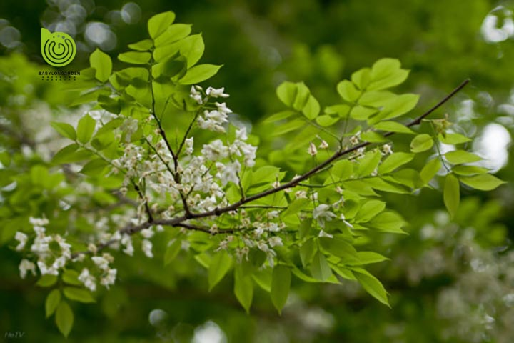
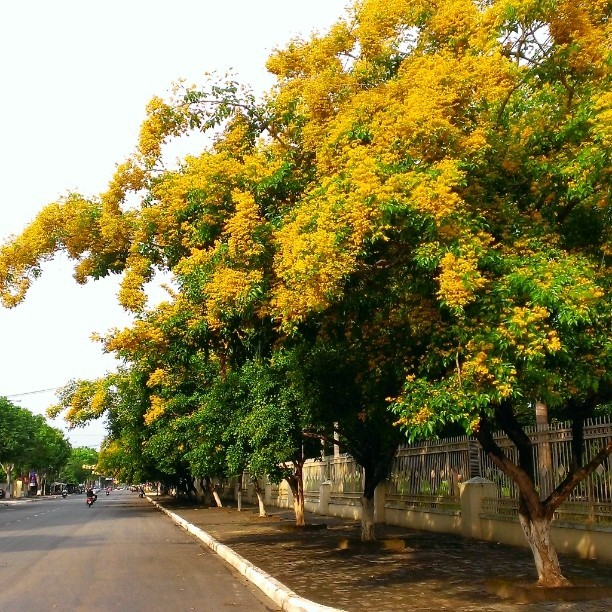

1. Đặc điểm hình thái
Là cây gỗ nhỡ, rụng lá theo mùa, cao từ 6-12m (cũng có thể cao tới 15m), sinh trưởng trung bình. Thân cây dạng hợp trục, dáng phân tán. Vỏ thân cây màu vàng nâu hay xám, nứt dọc. Cành non màu xanh, có lông mịn thưa. Lá mọc cách, cấu tạo lá dạng kép lông chim lẻ, mỗi là kép có từ 9-17 lá chét đính so-le trên cuống chính. Lá chét hình xoan thuôn, đầu nhọn hoặc có mũi ngọn, đuôi tròn, mặt dưới phiến lá thường có màu tái trắng. Kích thước lá chét dài từ 6–9 cm, rộng từ 3–5 cm, lá ché đính ở đầu cuống kép thường có kích thước lớn hơn các lá còn lại. Cuống chính và các cuống lá chét không lông, phiên lá chét không lông. Có lá kèm nhỏ không lông, sớm rụng.
Hoa mọc ra từ nách lá, thường xuất hiện trước khi lá mọc đầy đủ. Hoa tự tán gồm nhiều bông màu trắng, có kích thước 7-9mm, mùi thơm nhẹ. Mùa hoa vào tháng 2-3. Quả dạng đậu hình trứng thuôn dài, dài 5–7,5 cm, rộng khoảng 2-2,5 cm. Quả chứa 1-2 hạt, mỗi hạt có đường kính khoảng 8-9mm, hình thận dẹp. Quả khi chín không tự nứt.


2. Phân bố
Hiện nay sưa đỏ gồm 2 loại phổ biến: loại miền Bắc và loại Quảng Bình, Quảng Nam